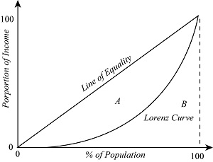

Today we will begin learning about wealth distribution and inequality
Poverty and its Problems
Poverty threshold: the minimum annual income that is considered adequate to purchase the necessities of life. Incomes below this amount are considered “poor.” For an individual in 2023, the poverty threshold was $15,060 per year. Four a family of four it was $31,200. [www.hhs.gov]
The poverty rate is the percentage of the population with incomes below the poverty threshold. In the USA, the poverty rate in 2022 was 11.5% [www.census.gov]
There are serveral Co-relating factors that lead to poverty: education level; proficiency in language; race and ethnicity; etc. These are trends, but not necessarily causes. The leading cause of poverty in the USA, however, is unemployment–when an income earner loses their job and cannot find work soon thereafter.
Economic Inequality
Income Distribution
Look at the difference between mean incomeand median income.
These numbers show that income is not distributed equally in the United States.
Inequality in income, or wealth, distribution can also be show visually with a model, just like market interactions are with demand and supply models. Income distribution can be show in a model called a Lorenz Curve, which compares percentage of income earned versus percent of the population (in quintiles). See the next Slide for what a Lorenz Curve looks like.
The Lorenz Curve
The Lorenz Curve indicates the percentage of all income received by the poorest members of the population, starting from the poorest 0% who receive 0% of the income and ending with the poorest 100% who receive 100% of the income. If everyone received the same income, the Lorenz curve would follow the line of equality. Income inequality causes the Lorenz curve to fall below the line of equality.
The Gini Coefficient
It’s often convenient to have a single number that summarizes a country’s level of income inequality. The Gini Coefficient, the most widely used measure of inequality, is the ratio of area A in Figure 78.2, between the line of equality and the Lorenz curve, to area B, below the line of equality. In other words, the Gini coefficient = A / (A + B)

A country with a perfectly equal distribution of income would have a Gini coefficient of 0, because the Lorenz Curve would follow the line of equality, and area A would be zero. At the other extreme, the highest possible value for the Gini coefficient is 1—the level it would attain if all of a country’s income went to just one person. In that case, area A would equal area A + B, because the Lorenz Curve would lie along the horizontal axis until the richest person was included, at which point it would jump up to a height of 100%.
Aside from a few countries in Africa, the highest levels of income inequality are found in Latin America; countries with a high degree of inequality, such as Brazil, have Gini coefficients close to 0.6. The most equal distributions of income are in Europe, especially in Scandinavia; countries with very equal income distributions, such as Sweden, have Gini coefficients around 0.25. Compared to other wealthy countries, the United States, with a Gini coefficient of 0.398 in 2021, has a somewhat high inequality, though it isn’t as unequal as in Latin America.